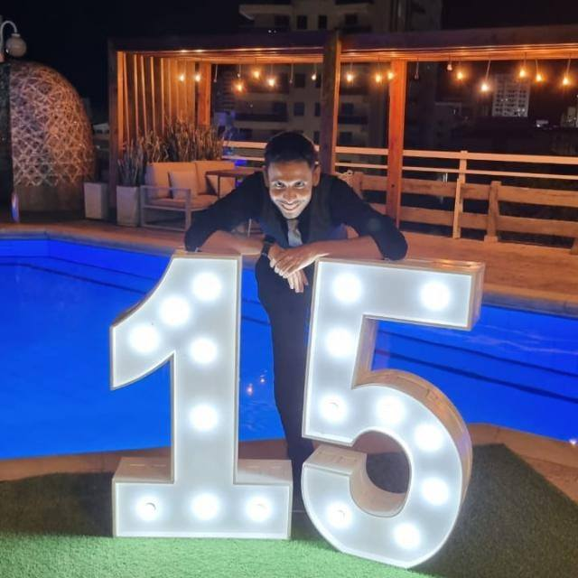

Bienvenido a mi presentacion personal
Este soy YO

Introduccion
Mi nombre es Johan Eduardo muñoz de la rosa, mi intencion con este pagina web es generar una presentacion personal sobre mi y que conozcas un poco de mi ser y habilidades como profesional
Perfil
Soy psicólogo con maestría en Psicología Clínica, Jurídica y Forense, experiencia en la evaluación e intervención psicológica de poblaciones vulnerables, incluyendo víctimas del conflicto armado, niños y adolescentes en situación de riesgo.Tengo habilidad para realización de diagnósticos clínicos, aplicación de pruebas psicológicas, elaboración de informes periciales y diseño de planes de intervención.
Experiencia Profesional
- Universidad del Magdalena
Cargo:Psicologo ( 18/11/2021 – 11/02/2023, Santa Marta )
- Apoyar el levantamiento de información en campo y laboratorio para caracterizar la salud mental, riesgos psicosociales, socioemocionales y violencia de género en la población del Magdalena.
- Aplicar campañas de atención psicosocial para promover la salud y prevenir el contagio de Covid-19, fomentando comportamientos pro-saludables y de bioseguridad
- Colaborar en la estructuración y elaboración de insumos para productos del proyecto, brindando soporte técnico y científico para el cumplimiento de objetivos
- Instituto Colombiano del Bienestar Familia (ICBF)
Cargo: Psicólogo Psicosocial ( 13/12/2021 – 30/06/2022, Ciénaga )
- Desarrollar planes de promoción y prevención en salud.
- Realizar diagnósticos de derechos a infantes utilizando instrumentos del ICBF
- Brindar acompañamiento psicosocial a estudiantes, padres y profesores.
- Programa para las naciones unidas(PNUD)
Cargo:Practicante Profesional ( 05-08-2016 – 05-12-2016, Villavicencio )
- Desarrollar trabajo investigativo en el marco de la Justicia Transicional con apoyo del Punto de Atención a Víctimas
- Adaptar las intervenciones a las necesidades educativas y psicosociales de las víctimas del conflicto armado
- Apoyar actividades de psicoeducación sobre la Paz y los acuerdos establecidos.
Mi Pasatiempos
- Dibujar
- Patinar
- Jugar videojuegos
Tareas Pendientes
- Ponerme al dia con el curso de talento tech
- Aprender de manera satisfactoria los verbos irregulares en ingles
- Mejorar mi estrategias de aprendizaje
Horario
| Lunes |
Martes |
Miercoles |
Jueves |
Viernes |
Sabado |
Domingo |
| Ponerme al dia con el curso de talento tech |
|
Aprender de manera satisfactoria los verbos irregulares en ingles |
|
Mejorar mi estrategias de aprendizaje |
|
|
Contacto
Puedes contcatarme en Mi Pagina Web
- Atencion
- El uso de esta pagina u hoja de vida es meramente didactico, por favor no usar en un contexto laboral real
- Referencias
- La informacion empleada es concebida apartir de las experiencias de vida del autor: Johan Eduardo Muñoz de la Rosa
© 2024 Mi presentacion personal